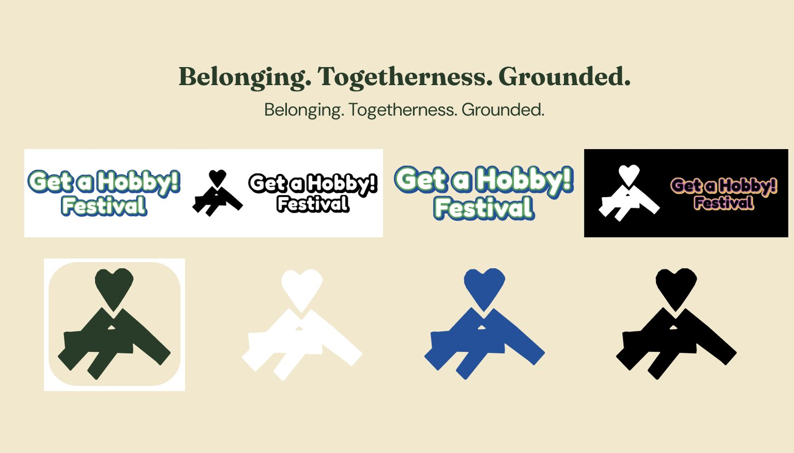
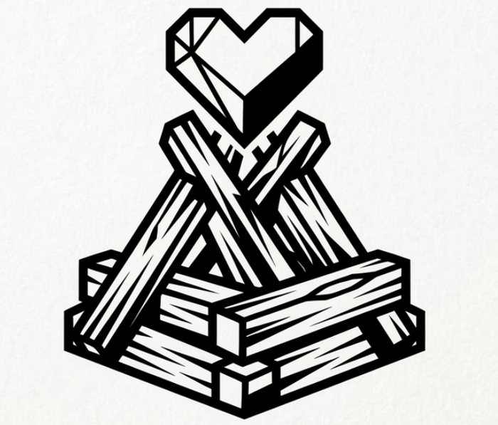
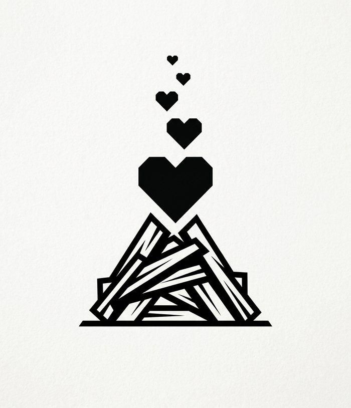
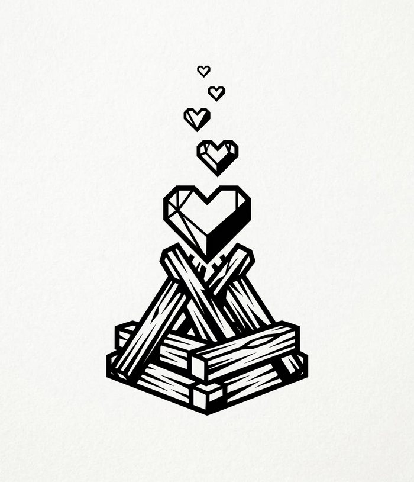
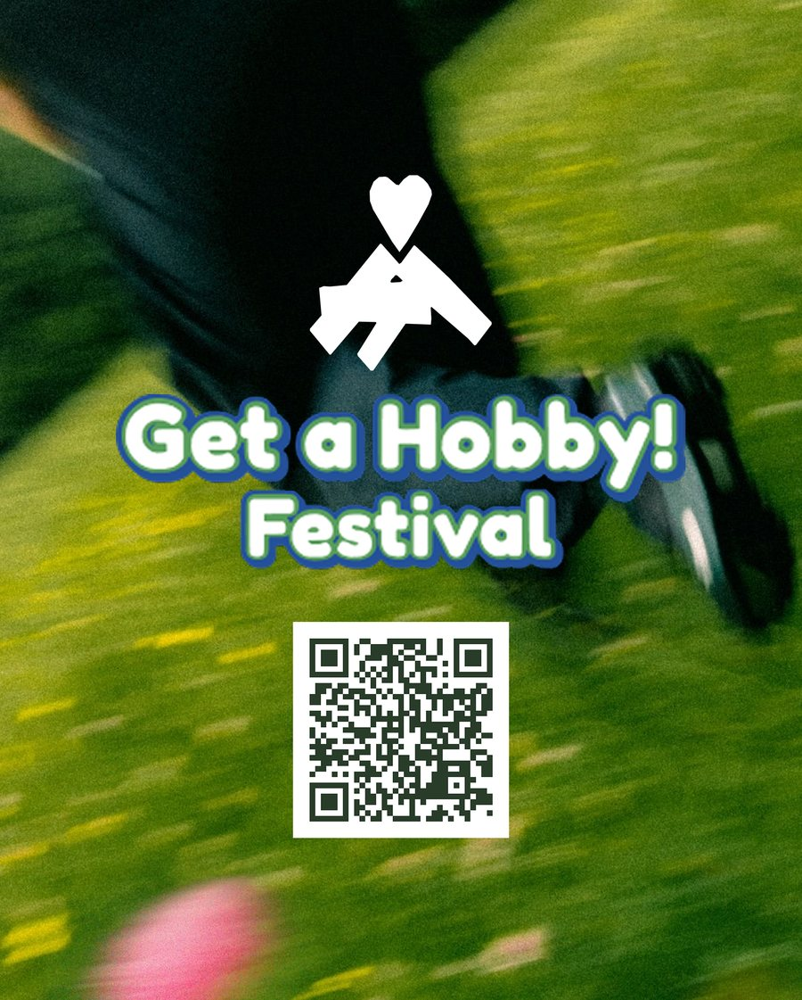

Get a Hobby! Festival
Get a Hobby! FestivalVersions
Every version side by side, with what changed and why.
1 · Wordmark and mark
Round white letters with green and blue outline.
Hobby symbols added. Dead end: they were not carried into the identity.

Hand-cut paper campfire with heart, wordmark, colour, black and negative versions.

The heart is larger and separated from the woodpile.
| Change | Why |
|---|---|
| Hobby symbols dropped, identity reduced to one mark plus the wordmark | The identity was built around one mark that carries the three words; a campfire stands for togetherness. The symbol burst is shown as a dead end. |
| Heart separated from the woodpile and made larger (after D-2) | D-2 feedback: the heart got lost in the paper cut. I made it bigger and gave it its own space. |
| Logo always used in correct proportions | D-2 feedback: proportions were distorted in Figma. In D-4 every version is scaled evenly. |
More mark explorations in my folder



2 · Typefaces
| Version | Fonts | Why |
|---|---|---|
| v1 (D-2) | Caveat for headings, Special Elite for body text | Handwritten and typewriter feel to match the paper-cut collage |
| Final (D-4 and on) | Fraunces SemiBold for headings, DM Sans for body text | I picked option A out of four pairs. Fraunces is a warm, soft serif that is handmade without being childish; DM Sans is clean and stays out of the way. Both are open licence (SIL OFL 1.1). |
3 · Colour
The four colours stayed the same from D-2 to the final: main blue #24519A, accent green #5A9F5D, text green #293C2A and cream #F1E8CE, sampled from the moodboard. The one change was a rule: the accent green on cream has a contrast of only 2.62:1, so from D-4 it is used for shapes and never for text. Text green on cream is 9.68:1.
4 · Poster

Photo, white mark, wordmark and QR code. No words with the code.

A solid blue band with “Go offline. Reconnect.” was added, plus 3 mm print bleed.
Why: my walkthrough showed that a QR code with no words is just a square. The line gives a reason to scan, and the solid band keeps it readable whatever the photo does.
5 · Prototype: landing page behind the QR code

Earlier dark logo. The page ends with the festival text.

Closing line “Now slide it into the bag.” added.

Final blue logo and a dark prompt panel for the closing line.
| Step | What changed | Why |
|---|---|---|
| v1 → v2 | Closing line “Now slide it into the bag.” | Emma reads “Put your phone down” on the very phone she is told to put down, so without a closing cue nothing makes her act. |
| v2 → v3 | Final logo, fonts and spacing; the closing line sits in a dark panel | Poster, object and page must look like one thing, because recognising the logo is how Emma trusts the code. The panel makes the line read as an instruction. |
6 · The concept
| Version | Idea |
|---|---|
| v1 | Blank wooden phone as ticket, names written on it |
| v2 | Phones stay outside the gate; everyone goes offline to reconnect |
| Final | Same festival, now reached through a campfire object on café tables that asks Emma to slide her phone into a bag |

Added after my walkthrough: the tagline next to the QR code, and a drawer sized for a large phone in a case with a finger notch, so it opens with one hand. The object itself is not built; it is a concept.